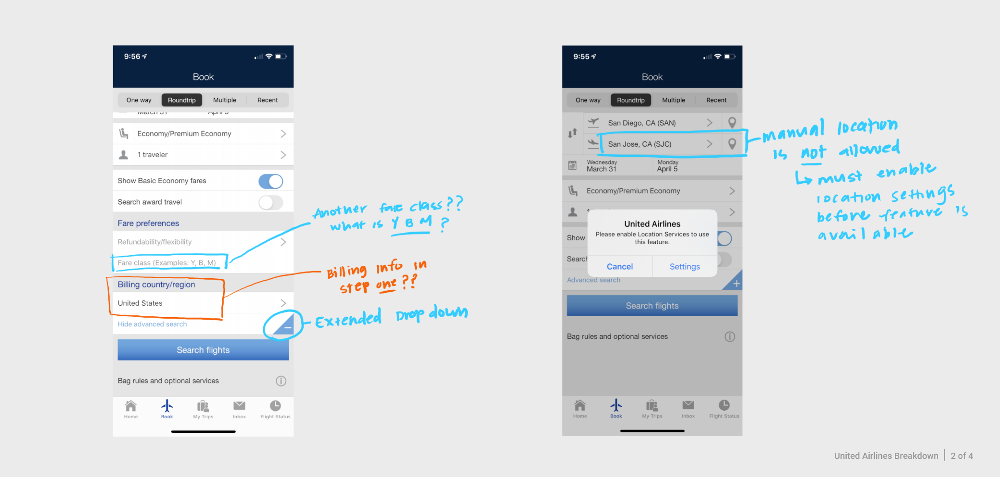
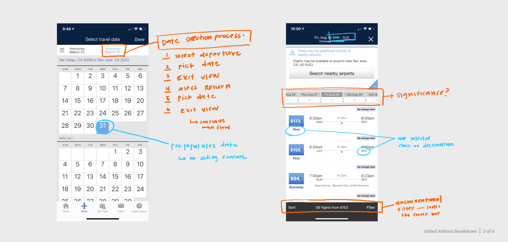
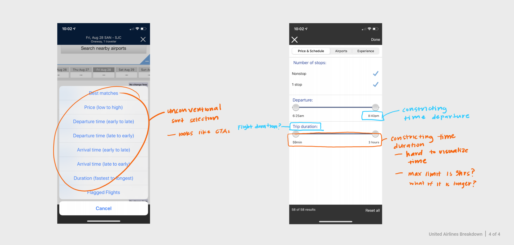
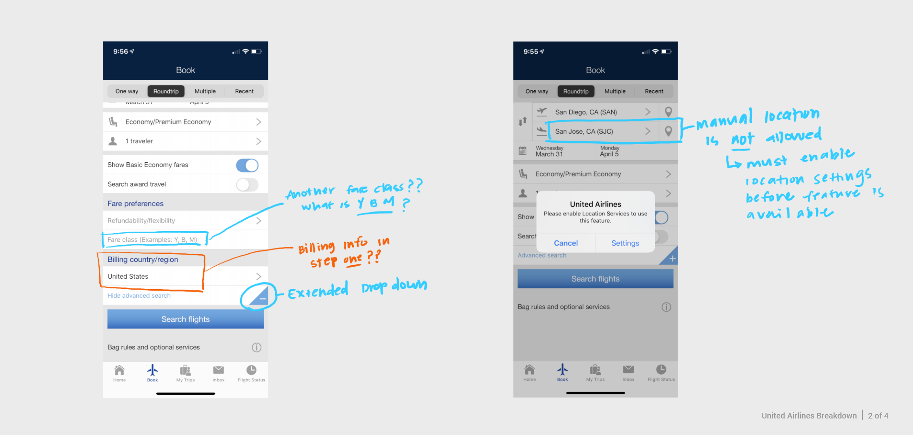
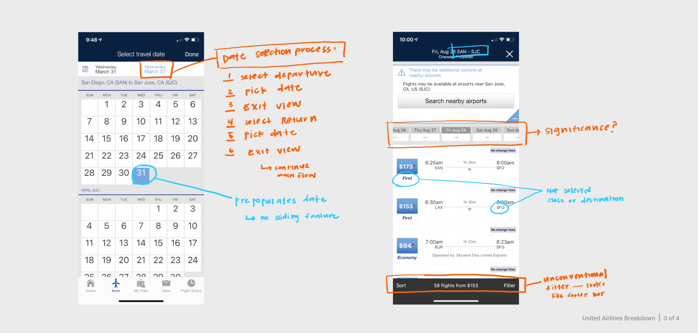
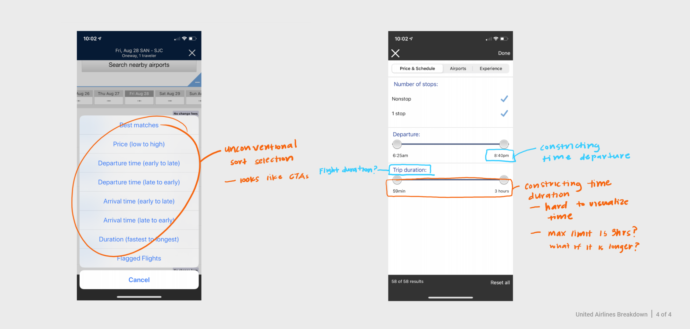

United Airlines Mobile Redesign - Ticket Buying Process
Overview
| Role | UI Designer |
| Goal | Enhance the visual experience of United Airlines’ mobile experience to streamline customer experience and maintain brand identity |
| Timeline | November 2019 - December 2019 |
| Skills | UI Design, Prototyping, Pattern Design, User Flow, Needfinding, Brand Identity, Prototyping |
| Tools | Figma |
Scope
United Airlines is one of the largest airline companies based in the United States. In 2019, United Airlines launched a new version of their mobile app. It ia an all-in-one application for travelers to access United flights, view itinerary, check in, and much more. This launch gained a lot of positive feedback from the community; however, the ticket buying proccess still lacked a few key features that would streamline the user’s experience.
The goal of redesigning United Airlines’ mobile application was to streamline the ticket buying experience and to reinforce the brand identity. This study focuses on improving the ticket buying process with universal UI design patterns.
Design Process
01. understand
First, I studied the United Airlines mobile app to analyze and understand the current UX workflow and to identify requirements.
02. re-design
Second, I created visual UI designs of the app and ensured that it followed design heuristic patterns.
03. prototype
Lastly, I developed an interactive prototype for demonstration and testing purposes.
Breaking Down the Current Buying Process
 





In this phase of the process, I needed to understand the current UX workflow of the ticket buying process. So. I went through the mobile app purchasing process as if I was purchasing a ticket, and mapped out the current user actions.
From this exercise, I identify areas of opportunities and noticed two major issues:
- The initial information for the check out process is overwhelming. In step one of the ticketing process, all inputs and selections were presented to the user on a single page with no clear grouping or labeling. A few of the items were similarly labeled, or used unconventional terms and language.
- The United Airlines brand identity is inconsistent throughout the mobile application. The first 2-3 screens have strong brand messaging; however when you enter the ticket buying and checkout process the branding is lacking, and not the same. These inconsistencies could potentially negatively affect a user’s expectation and brand perception.
Drafting Mockups
After I identified key areas of opportunities, I sketched out mock ups that highlighted the changes that were to be made in the UI. This was helpful to quickly ideate and make changes as needed.
Designing with UI Heuristic Patterns
When approaching the redesign, I referred to ui-patterns.com and nngroup.com. To minimize the risk of "reinventing the wheel" and creating new UI design patterns, I used these resources as a guideline when implementing new features. The goal was to lower the potential learning curve and new design pains by using universal design patterns that have already been established and known to most users.
Pattern: Card System
A card system was implemented to chunk and organize information to enhance scannability.
This is the first screen users see. It is important to display a lot of information in an organized and digestible manner.
Key features of a Card System:
- Organizes information clearly
- Groups information based on similar categories
- Allows multiple types of information to be used at the same time
- Encourages user's curiosity and exploration
Pattern: Overlay Modal
Selecting a location is an important step of the ticket buying process. An overlay modal was implemented to assist users to stay within the process and to not get lost.
The overlay modal sits on top of a transparent dark background to create a focused task and to signify that the user is still within the same part of the process. The user never leaves the UI to enter a new workflow.
Key features of a Card System:
- Focuses user to the task on hand
- Removes distraction within a process
- Streamline single workflow
Pattern: Auto Complete
Auto complete was implimented during the location selection process to assist a user to quickly find their destination
Key features of a Card System:
- Assist the user (no memorization), and minimize potential user input errors
- Quicker look up time - which can lead to positive user engagement
Pattern: Calendar Date Picker
A calendar date picker was implemented to streamline the calendar input process. The calendar design is an universal design heuristics that most users already know.
Key features of a Card System:
- Helps users visualize the dates and duration that they are choosing to go
- Familiar experience, leading to faster data selection
Pattern: Dropdown Expand Details
Searching for a lot of information can be an overwhelming task. A dropdown feature was implemented to truncate and minimize information.
Key features of a Card System:
- Users can customize what they want and how much they want to see
- Truncate information is visually less overwhelming and less cluttered
- Minimized information allows for focused tasks
Pattern: Completion Reward
Checking out online can be a tedious process. If the process experience for the user is negative, this can deter users from wanting to return
So, to help notify and encourage that they have successfully completed their transaction, a completed reward message is implemented at the end.
Key features of a Card System:
- Gamify check out completion and reward the user at the end of the transaction - “make it fun”
- ndicated user had successfully completed the task
Interactive Prototype
Lastly, a high-fidelity interactive prototype was created to help illustrate user interactions and corporate brand identity implimentation